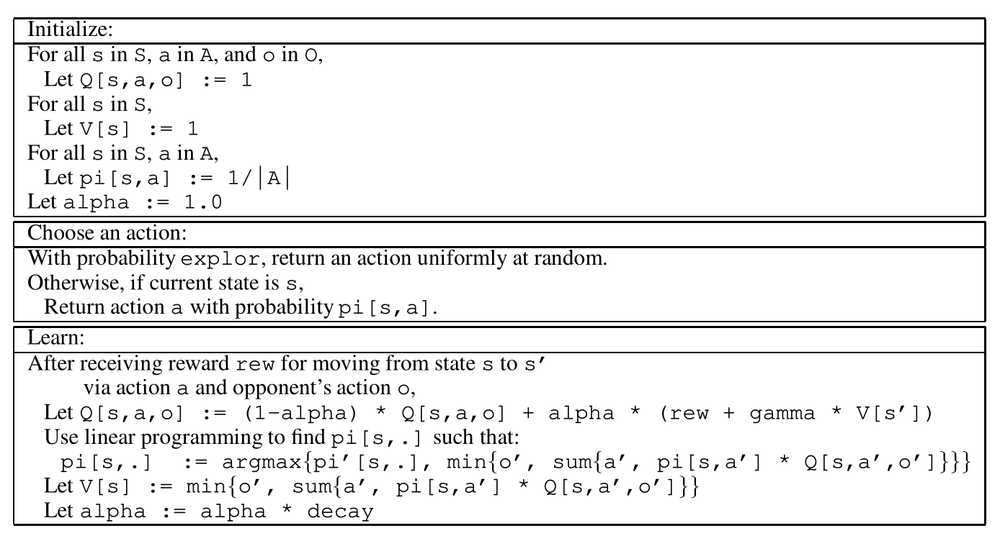

多智能体深度强化学习
Table of Contents
博弈论基础
矩阵博弈
一个矩阵博弈可以表示为\((n, A_1, A_2, \cdots, A_n, R_1, R_2, \cdots, R_n)\)，其中：
- \(n\)表示智能体的个数
- \(A_i\)表示智能体 i 的动作集
- \(R_i\)表示智能体 i 的奖励函数
- 联结动作空间 \(A_1 \times \cdots \times A_n\)
- 每个智能体的策略\(\pi_i\)是一个关于其动作空间\(A_i\)的概率分布
- 每个智能体的目标是最大化其奖励
- 不包含状态，只包含动作和奖励
令\(V_i(\pi_1, \pi_2, \cdots, \pi_n)\)表示智能体 i 在联结策略\((\pi_1, \pi_2, \cdots, \pi_n)\)下的期望奖励，即值函数。
纳什均衡
一个策略组合被称为纳什均衡，当每个博弈者的均衡策略都是为了达到自己期望收益的最大值。不论其他博弈者采取什么策略，此博弈者采取这个策略都能获取最大的期望收益，那么该确定策略被称为支配性策略。
矩阵博弈纳什均衡
在矩阵博弈中，如果联结策略\(\pi_1^*, \pi_2^*, \cdots, \pi_n^*\)满足： \[ V_i(\pi_1^*, \cdots, \pi_i^*, \cdots, \pi_n^*) \geq V_i(\pi_1^*, \cdots, \pi_i, \cdots, \pi_n^*) \]
即，在其他智能体策略一定的条件下，智能体 i 的其他策略都不能使 i 获得比策略\(\pi_i^*\)更好的奖励，称策略\(\pi_i^*\)为智能体 i 的纳什均衡策略。 若所有智能体均找到了各自的纳什均衡策略，当前策略组合为矩阵博弈的纳什均衡策略。
完全混合策略
若智能体 i 对动作集\(A_i\)的所有动作的概率都大于 0，那么这个策略被称为完全混合策略。
纯策略
若智能体 i 对动作集\(A_i\)中一个动作概率为 1，其余为 0，那么这个策略被称为纯策略。
两个智能体的矩阵博弈中的纳什均衡
对于两个智能体的矩阵博弈，我们设计：
- 坐标\((a_1 \in A_1, a_2 \in A_2)\)表示一个联结动作
- 智能体 i 的奖励矩阵\(R_i\)，其中每个元素\(r_{xy}\)表示：第一个智能体执行\(x\)动作，第二个智能体执行\(y\)动作，智能体 i 得到的奖励
零和博弈
在零和博弈中，两个智能体处于完全竞争对抗状态。只有一个纳什均衡解。
其他博弈概念
马尔科夫决策过程包含一个智能体和多个状态；矩阵博弈包含多个智能体和一个状态（不变）。随机博弈（Stochastic game or Markov game）是前面二者的结合，即多智能体强化学习。
静态博弈
无状态 s 的博弈。例如矩阵博弈。
阶段博弈
随机博弈的组成部分，状态 s 是固定的，相当于是状态固定的静态博弈。若干状态的阶段博弈构成随机博弈。
重复博弈
智能体重复访问同一个状态的阶段博弈，并且在访问过程中收集环境和其他智能体的信息，用来不断更新 Q 值，更新策略。
多智能体强化学习
多智能体强化学习就是一个随机博弈，将每一个状态的阶段博弈的纳什均衡策略组合起来称为一个智能体在动态环境中的策略，并不断于环境交互来更新每一个状态的阶段博弈的策略。 一个随机博弈可以写为\((n, S, A_1, \cdots, A_n, T_r, \gamma, R_1, \cdots, R_n)\)，其中：
- \(n\)：智能体的个数
- \(S\)：环境状态集合
- \(A_i\)：智能体 i 的动作集
- \(\gamma\)：衰减因子
- \(R_i\)：智能体 i 的奖励函数
- \(T_r\)：状态转移概率，\(S \times A_1 \times \cdots \times A_n \times S\)
随机博弈也具有马尔科夫性，下一个状态只于当前状态和当前动作集有关。
对于多智能体强化学习，就是找到每一个状态的阶段博弈的纳什均衡，然后将这些策略联合起来。记多智能体强化学习的最优策略为\((\pi_1^*, \cdots, \pi_i^*)\)，其满足： \[ V_i(s, \pi_1^*, \cdots, \pi_i^*, \cdots, \pi_n^*) \geq V_i(s, \pi_1^*, \cdots, \pi_i, \cdots, \pi_n^*) \] 即，某个智能体在最优策略下的值函数一定大于等于其在其他策略下的值函数。
记\(Q_i^*(s, a_1, a_2, \cdots, a_n)\)表示智能体 i 在状态 s，动作为\((a_1, a_2, \cdots, a_n) \in (A_1, A_2, \cdots, A_n)\)下的动作值函数，由 Bellman 方程得：
\[ V_i^*(s) = \sum_{a_1, \cdots, a_n \in A_1 \times \cdots \times A_n} Q_i^*(s, a_1, \cdots, a_n)\pi_1^*(s, a_1)\pi_2^*(s, a2)\cdots\pi_n^*(s, a_n) \]
\[ Q_i^*(s, a_1, \cdots, a_n) = \sum_{s\prime \in S}T_r(s, a_1, \cdots, a_n, s\prime)[R_i(s, a_1, \cdots, a_n, s\prime) + \gamma V_i^*(s\prime)] \]
Minimax-Q
在两个玩家的零和博弈中，可以使用 Minimax-Q 算法求解博弈的纳什均衡。Q 指的是使用 Q-Learning 中的方法迭代学习动作状态值函数。
在两个玩家的零和博弈中，给定状态 s，定义智能体 i 的最优状态值函数： \[ V_i^*(s) = \max \limits_{\pi_i(s, \cdot)} \min \limits_{a_{-i} \in A_{-i}} \sum_{a_i \in A_i} Q_i^*(s, a_i, a_{-i})\pi_i(s, a_i), i = 1, 2 \]
这个式子的含义为：智能体 i 在状态 s 的最优状态值函数为最大化最坏情况下的动作值函数 Q。
可以使用线性规划求出位于 s 处的纳什均衡策略。
